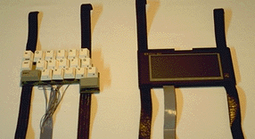

A Wearable Computer for Use in Microgravity Space
and Other Non-Desktop Environments
Edgar Matias
The Matias Corporation
178 Thistledown Boulevard
Rexdale, Ontario, Canada M9V 1K1
(416) 749-3124
ematias@dgp.toronto.edu
I. Scott MacKenzie
Dept. of Computing and Information Science
University of Guelph
Guelph, Ontario, Canada N1G 2W1
(519) 824-4120
mac@snowhite.cis.uoguelph.ca
William Buxton
University of Toronto & Xerox PARC
c/o Computer Systems Research Institute
University of Toronto
Toronto, Ontario, Canada M5S 1A4
(416) 978-1961
buxton@dgp.toronto.edu
ABSTRACT
We present one possible design for a "wearable" computer--a computer that is worn. Our prototype permits text entry without the need of a table or other supporting surface. Typing can be performed while standing or even walking. Possible applications for this device are also discussed.
KEYWORDS:
Input devices, input tasks, wearable computers, portable computers, Half-QWERTY, one-handed keyboard, skill transfer.
INTRODUCTION
The tremendous and increasing popularity of notebook computers over the past several years has encouraged manufacturers to push the envelope ever further. This has led to the development of palmtops and PDAs, devices small enough to fit in the palm of your hand. In an interesting spin-off, the technologies which make these devices possible are being used to push portability even further, creating a new breed of computer known as a "wearable." While not yet common, their eventual success relies on finding niche applications to pave the way for more general use. In this paper we present one possible design for a wearable, and explore a few possible niches.
DESIGN PROTOTYPE
Our prototype wearable consists of three modules (Figure 1): keyboard [1], display, and computer. The keyboard and display modules are strapped to the operator's forearms. The computer module can be carried in a waist pouch or backpack, along with batteries for power. By assuming the typing posture in Figure 2, the operator can enter text information. At other times, the operator's hands are free to perform other tasks. In mobile applications, this is often important.

Figure 1. Keyboard and display modules of prototype wearable computer. The computer and battery module is not shown.
Design Factors
We had four main goals in mind while designing our wearable:
- Minimize training
- Minimize fatigue
- Minimize weight
- Minimize power consumption
Training was minimized by using a Half-QWERTY one-handed keyboard as the primary input device. This keyboard allows touch-typists to type one-handed using their existing typing skills [1].
To minimize fatigue, we balanced the weight distribution of the device. The keyboard (170 g) and display (175 g) modules are roughly the same weight, and are light enough to avoid undue fatigue on the arms. The heavier batteries and computer module (180 g) are worn on the waist or in a backpack, where their weight is less fatigue inducing.
Much as with normal computer use, posture plays an important part in minimizing the fatigue of using a wearable. Proper typing posture is shown in Figure 2. The operator's arms rest against the body, with the shoulders relaxed. The elbows are bent at 90 degree angles, and the wrists are kept straight. This posture can be maintained for the short time periods typical of most mobile text entry tasks. When not performing such tasks, the operator's arms can rest at their sides.
Figure 2. Wearable worn by an operator. Proper typing posture is shown. Operator's arms rest against the body, with shoulders relaxed. Elbows are bent at 90 degree angles, and wrists are kept straight.
We minimized weight and power consumption by building our prototype out of a palmtop computer. It weighed 325 g, before we started our modifications. The final wearable (including belt pouch) weighs 655 g. It runs on two AA batteries and uses various means of conserving power. For example, instead of using a backlit grey-scale LCD, it uses a monochrome (1-bit) non-backlit LCD and relies on ambient light. The result is a clear display with minimal power consumption.
APPLICATIONS &
ENVIRONMENTAL CONSTRAINTS
The environment in which a wearable is to be used places certain constraints on its design, operation, and application. As a starting point, the following four facilities, normally taken for granted in an office environment, are not generally supplied by the environments in which wearable computers are useful:
- No desk
- Gravity not as useful
- No communications link
- No power
Below we consider possible applications of wearables in two environments, given the constraints listed above:
In-Shuttle Microgravity Space
In space, gravity is so weak that anything you push against projects you away from it. This makes typing understandably difficult. It also makes it an ideal environment for using a wearable computer. Since nothing external is being pushed against, the "flying typist" problem is avoided. Astronauts working inside a spacecraft could wear the units and use them for entering and retrieving data. A wireless link could be established between the wearable and the spacecraft's main computer, permitting the exchange and storage of information.
Earth-Bound Non-Desktop Environments
A wearable is also well suited to work "in the field." This includes data collection and retrieval in out-of-doors situations, such as: field service, inventory, surveying, etc. As well, highly mobile in-door work can also benefit from having a wearable. For example, inspectors performing on-site evaluations of factories can take notes and call-up information on past evaluations. When not entering information, their hands are still free to point at things, grasp objects, make hand gestures, etc.
Operator Capacities
The environment can also limit or enhance an operator's capacity to perform certain general functions. They include:
- Holding capacity
- Manipulation capacity
- Carry/storage capacity
- Rest capacity
For example, in space an operator's holding capacity is enhanced due to the lack of gravity. A tool released in mid-air will remain suspended until it is needed again. Such feats are not possible on Earth. These capacities will also affect the net usability of wearables.
REFERENCES
[1] Matias, E., MacKenzie, I. S., & Buxton, W. (1994). Half-QWERTY: Typing with one hand using your two-handed skills. Companion of the CHI '94 Conference on Human Factors in Computing Systems (pp. 51-52). New York: ACM. Available online (43K).
{kind=link}